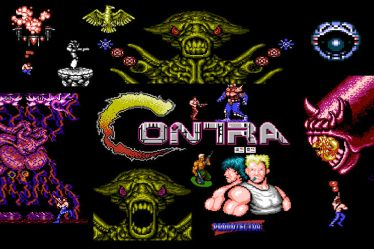
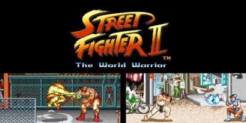
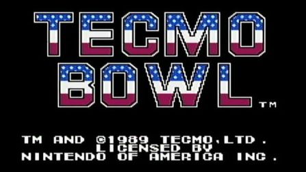
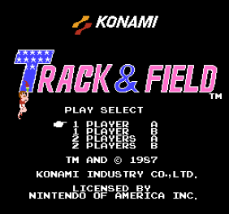
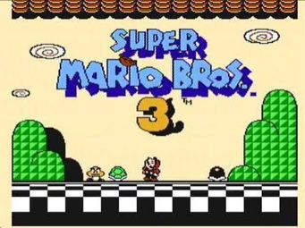
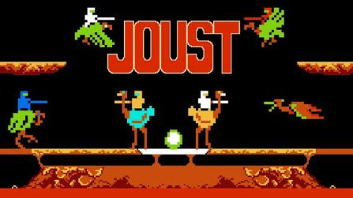
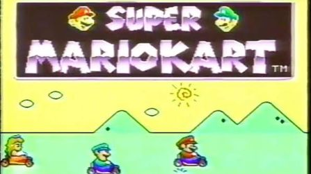
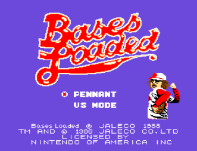
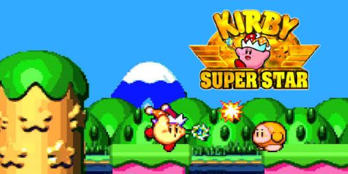
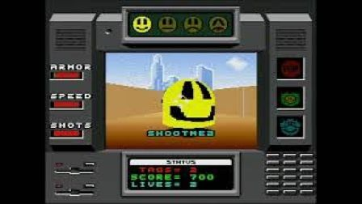

Top 10 Two-Player Games
#1: Contra
Contra is a legendary run-and-gun game that has stood the test of time. Its fast-paced action, challenging levels, and cooperative gameplay make it a must-play for fans of two-player experiences. Players can team up to take on waves of enemies and bosses, requiring coordination and strategy to succeed. The game's iconic Konami Code (up, up, down, down, left, right, left, right) also adds an extra layer of fun, allowing players to unlock additional lives and power-ups.

#2: Street Fighter II
Street Fighter II is a groundbreaking fighting game that defined the genre and introduced iconic characters like Ryu, Ken, and Chun-Li. With its fast-paced combat, special moves, and competitive multiplayer modes, it offers an engaging experience that has stood the test of time. Players can battle against each other in various stages, testing their skills and mastering the game's intricate mechanics. Really any of the street fighter games could have been on this list, but I chose Street Fighter II because it was the first I played.

#3: Tecmo Bowl
To all football lovers, Tecmo Bowl is a classic arcade game that offers a fun, competitive experience for two players. With its fast-paced action and simple controls, it's easy to pick up and play. Enjoy the thrill of scoring touchdowns and making strategic plays as you compete against your friend in this retro sports game. Back when the 49rs and the Giants were the best teams in the NFL this is what made me a 49rs fan.

#4: Track and Field
Track and Field is a classic sports game that allows two players to compete in various athletic events. With its fast-paced gameplay and simple controls, it's easy to pick up and play. Players can test their skills in events like the 100-meter dash, long jump, and shot put. Awesome button mashing required to get the best times, and the game is a lot of fun to play with friends.

#5: Super Mario Bros. 3
Super Mario Bros. 3 is a beloved platformer that offers an engaging two-player experience. The only reason it's not higher on the list is because the two players have to alternate between levels. With its diverse levels, power-ups, and cooperative gameplay, it provides hours of fun for both players. There are tons of secrets to discover, and I personally have played the game through multiple times and still find new tricks and secrets to discover.

#6: Joust
Joust is a classic arcade game that offers a fun, competitive experience for two players. With its fast-paced action and simple controls, it's surprisingly not easy to pick up. Everything happens very fast throughout the game, and it takes a lot of practice to get good at it. Players can compete to see who can survive the longest or just have fun trying to knock each other off their mounts.

#7: Super Mario Kart
Super Mario Kart is a beloved racing game that offers an engaging two-player experience. With its fast-paced gameplay and diverse tracks, it provides hours of fun for both players. It's hard to learn for people that are used to the new ones, but once you get the hang of it, it's a blast. Players can compete in various modes, including time trials and battle royales, making it a great choice for competitive play.

#8: Bases Loaded
Bases Loaded is a classic baseball game that offers a fun, competitive experience for two players. I would recommend looking up how to play because some of the controls are not very intuitive. Players can take on the roles of different teams and compete in various scenarios, making it a great choice for baseball fans.

#9: Kirby Super Star
Unlike older platformers that force players to take turns, Kirby Super Star delivers true simultaneous couch co-op through its clever Helper system. Whenever Kirby swallows an enemy and sacrifices a Copy Ability, a second player can instantly jump in as a playable ally—like Blade Knight, Knuckle Joe, or Waddle Doo—complete with their own full moveset. Packed with multiple distinct adventures ranging from treasure-hunting labyrinths to fast-paced boss rushes and reflex mini-games, it lets two players team up, share health items, and swap powers on the fly without ever slowing down the action.

#10: Faceball 2000
Introduced to me by my dad, Faceball 2000 is an underrated, niche gem that proves early 16-bit 3D gaming can still be an absolute blast with two players. Dropped into a minimalist, first-person cyber-maze filled with giant geometric smiley faces, you and a second player can team up in split-screen Cyberscape stages or go head-to-head in frantic Arena battles—shooting down enemy shapes, dodging around corners, and hunting for the exit. Its quirky retro look, upbeat soundtrack, and surprisingly addictive maze-crawling action make it a hidden couch-multiplayer classic that stands out from anything else on the SNES.
